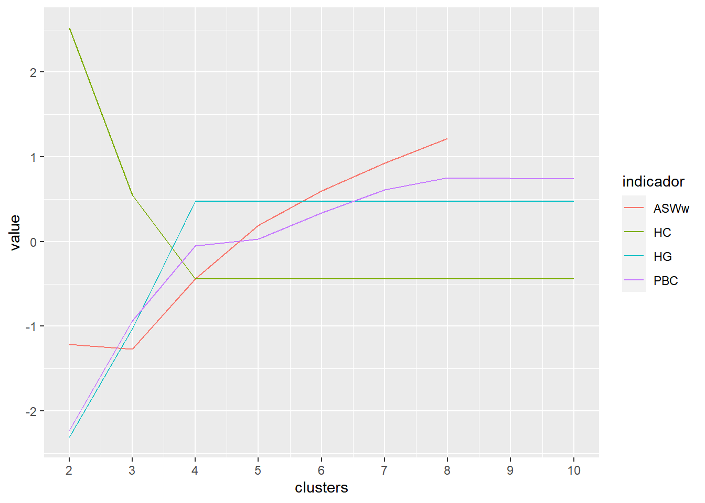
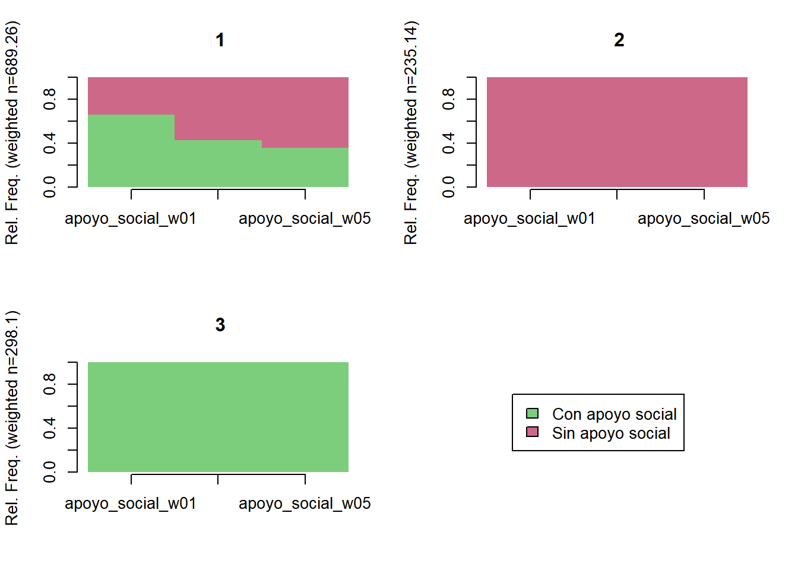
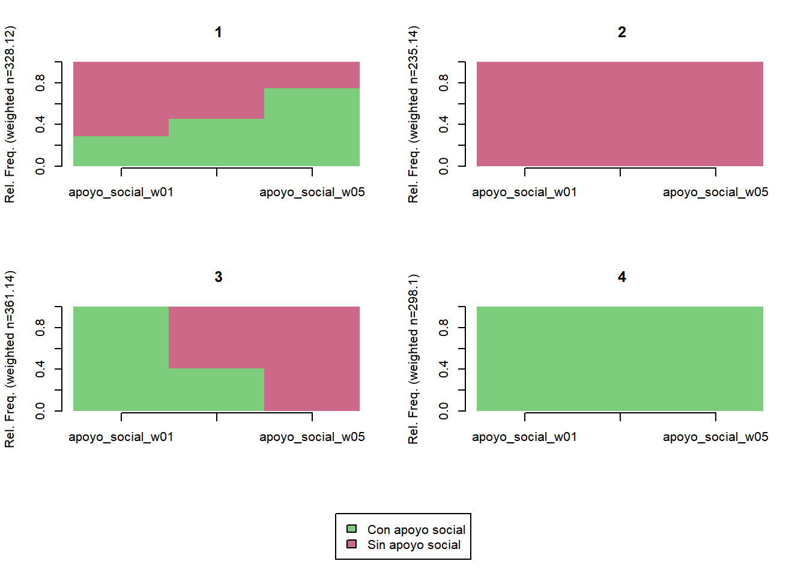
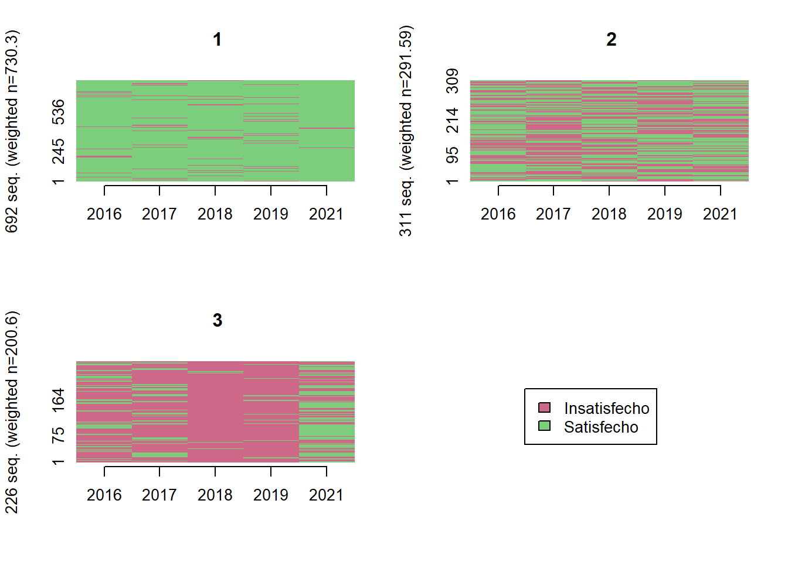
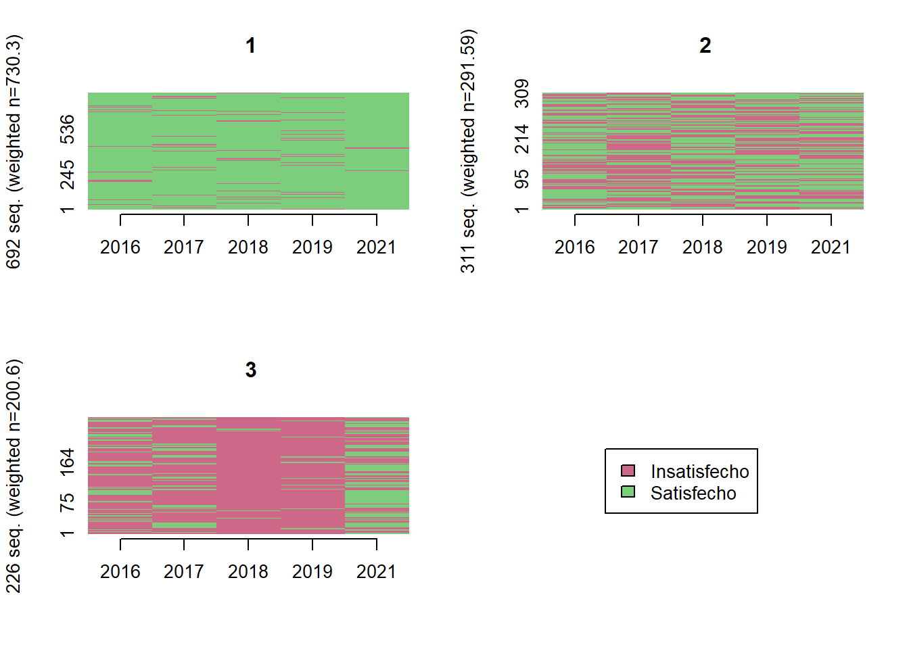
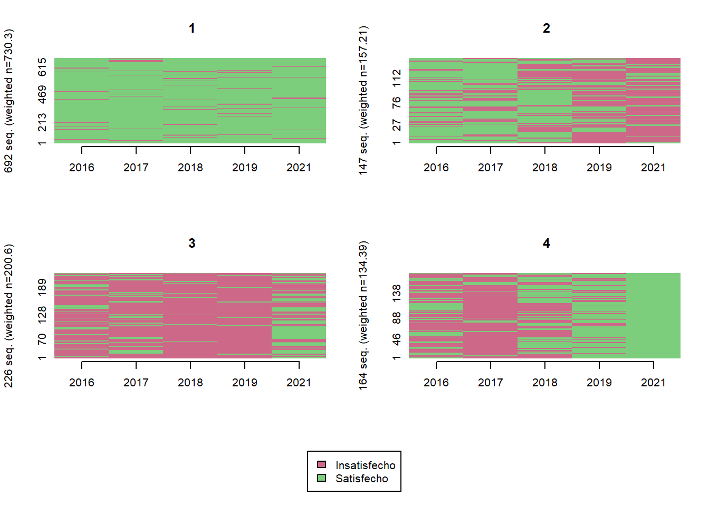
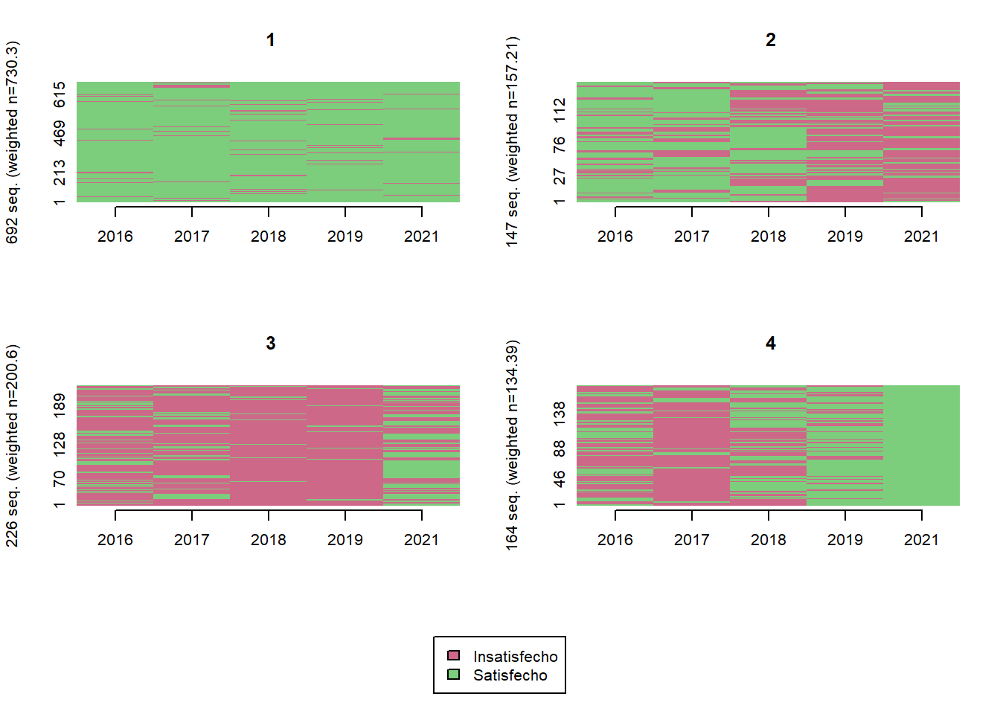

Capítulo 3 Modelos
3.1 Preparar datos:
Agregar variables de trayectoria de los distintos modelos:
elsoc_salud$trayectoria_om4.5 <- factor(stats::cutree(ward.depr4, k = 5),
levels = c(5, 4, 2, 3, 1),
labels = c('Trayectoria baja/media',
'Trayectoria media/moderada',
'Trayectoria descendente',
'Trayectoria ascendente',
'Trayectoria alta/moderada'))
elsoc_salud$trayectoria_om2.3 <- stats::cutree(ward.depr2, k = 3)
elsoc_salud$trayectoria_gmm.4lin <- factor(elsoc_salud %>%
left_join(lcmm4_lin$pprob %>% select(idencuesta, class),
by = 'idencuesta') %>%
pull(class),
levels = c(4, 3, 1, 2),
labels = c('Trayectoria baja', 'Trayectoria media', 'Trayectoria descendente', 'Trayectoria ascendente'))
elsoc_salud$trayectoria_gmm.4quad <- factor(elsoc_salud %>%
left_join(lcmm4_quad$pprob %>% select(idencuesta, class),
by = 'idencuesta') %>%
pull(class),
levels = c(3, 2, 1, 4),
labels = c('Trayectoria baja', 'Trayectoria media', 'Trayectoria descendente', 'Trayectoria ascendente'))
elsoc_salud$trayectoria_gmm.5lin <- elsoc_salud %>%
left_join(lcmm5_lin$pprob %>% select(idencuesta, class),
by = 'idencuesta') %>%
pull(class)
elsoc_salud$trayectoria_gmm.5quad <- elsoc_salud %>%
left_join(lcmm5_quad$pprob %>% select(idencuesta, class),
by = 'idencuesta') %>%
pull(class)Agregar variables independientes
elsoc_salud_modelo <- elsoc_salud %>%
filter(!elsoc::is_nsnr(m30_w01, m30_w02, m30_w03, m30_w04, m30b_w05)) %>%
mutate(
# Variables de ingreso:
m30_w01 = 1000*as.numeric(car::recode(m30_w01, "1 = 220; 2 = 250; 3 = 305; 4 = 355; 5 = 400; 6 = 445; 7 = 490;
8 = 535; 9 = 585; 10 = 640; 11 = 700; 12 = 765; 13 = 845; 14 = 935;
15 = 1040; 16 = 1180; 17 = 1375; 18 = 1670; 19 = 2275; 20 = 2700; NA = NA")),
m29_w01_imp = ifelse(is_nsnr(m29_w01), m30_w01, m29_w01),
ypc_w01 = m29_w01_imp / nhogar1_w01,
m30_w02 = 1000*as.numeric(car::recode(m30_w02, "1 = 220; 2 = 250; 3 = 305; 4 = 355; 5 = 400; 6 = 445; 7 = 490;
8 = 535; 9 = 585; 10 = 640; 11 = 700; 12 = 765; 13 = 845; 14 = 935;
15 = 1040; 16 = 1180; 17 = 1375; 18 = 1670; 19 = 2275; 20 = 2700; NA = NA")),
m29_w02_imp = ifelse(is_nsnr(m29_w02), m30_w02, m29_w02),
ypc_w02 = m29_w02_imp / nhogar1_w01,
m30_w03 = 1000*as.numeric(car::recode(m30_w03, "1 = 220; 2 = 250; 3 = 305; 4 = 355; 5 = 400; 6 = 445; 7 = 490;
8 = 535; 9 = 585; 10 = 640; 11 = 700; 12 = 765; 13 = 845; 14 = 935;
15 = 1040; 16 = 1180; 17 = 1375; 18 = 1670; 19 = 2275; 20 = 2700; NA = NA")),
m29_w03_imp = ifelse(is_nsnr(m29_w03), m30_w03, m29_w03),
ypc_w03 = m29_w03_imp / ifelse(is_nsnr(m54_w03), NA, m54_w03),
m30_w04 = 1000*as.numeric(car::recode(m30_w04, "1 = 220; 2 = 250; 3 = 305; 4 = 355; 5 = 400; 6 = 445; 7 = 490;
8 = 535; 9 = 585; 10 = 640; 11 = 700; 12 = 765; 13 = 845; 14 = 935;
15 = 1040; 16 = 1180; 17 = 1375; 18 = 1670; 19 = 2275; 20 = 2700; NA = NA")),
m29_w04_imp = ifelse(is_nsnr(m29_w04), m30_w04, m29_w04),
ypc_w04 = m29_w04_imp / ifelse(is_nsnr(m54_w04), NA, m54_w04),
m30b_w05 = 1000*as.numeric(car::recode(m30b_w05, "1 = 225; 2 = 575; 3 = 850; 4 = 1250; 5 = 1750; NA = NA")),
m29_w05_imp = ifelse(is_nsnr(m29_w05), m30b_w05, m29_w05),
ypc_w05 = m29_w05_imp / ifelse(is_nsnr(m54_w05), NA, m54_w05),
log_ing = log((ypc_w01 + ypc_w02 + ypc_w03 + ypc_w04 + ypc_w05)/5),
quintil_w01 = statar::xtile(ypc_w01, n = 5, wt = ponderador02_w01),
quintil_w01 = factor(quintil_w01,
levels = 1:5,
labels = glue::glue('Quintil {1:5}')),
quintil_w02 = statar::xtile(ypc_w02, n = 5, wt = ponderador02_w02),
quintil_w02 = factor(quintil_w02,
levels = 1:5,
labels = glue::glue('Quintil {1:5}')),
quintil_w03 = statar::xtile(ypc_w03, n = 5, wt = ponderador02_w03),
quintil_w03 = factor(quintil_w03,
levels = 1:5,
labels = glue::glue('Quintil {1:5}')),
quintil_w04 = statar::xtile(ypc_w04, n = 5, wt = ponderador02_w04),
quintil_w04 = factor(quintil_w04,
levels = 1:5,
labels = glue::glue('Quintil {1:5}')),
quintil_w05 = statar::xtile(ypc_w05, n = 5, wt = ponderador02_w05),
quintil_w05 = factor(quintil_w05,
levels = 1:5,
labels = glue::glue('Quintil {1:5}')),
ocup_w01 = factor(car::recode(m02_w01, "1:3 = 1; 6 = 2; c(4, 5, 7, 8, 9) = 3"),
levels = 1:3,
labels = c('Ocupado', 'Desempleado', 'Inactivo')),
ocup_w02 = factor(car::recode(m02_w02, "1:3 = 1; 6 = 2; c(4, 5, 7, 8, 9) = 3"),
levels = 1:3,
labels = c('Ocupado', 'Desempleado', 'Inactivo')),
ocup_w03 = factor(car::recode(m02_w03, "1:3 = 1; 6 = 2; c(4, 5, 7, 8, 9) = 3"),
levels = 1:3,
labels = c('Ocupado', 'Desempleado', 'Inactivo')),
ocup_w04 = factor(car::recode(m02_w04, "1:3 = 1; 6 = 2; c(4, 5, 7, 8, 9) = 3"),
levels = 1:3,
labels = c('Ocupado', 'Desempleado', 'Inactivo')),
ocup_w05 = factor(car::recode(m02_w05, "1:3 = 1; 6 = 2; c(4, 5, 7, 8, 9) = 3"),
levels = 1:3,
labels = c('Ocupado', 'Desempleado', 'Inactivo')),
insatisf_ing_w01 = factor(m16_w01 %in% 1:2),
insatisf_ing_w02 = factor(m16_w02 %in% 1:2),
insatisf_ing_w03 = factor(m16_w03 %in% 1:2),
insatisf_ing_w04 = factor(m16_w04 %in% 1:2),
insatisf_ing_w05 = factor(m16_w05 %in% 1:2),
activ_fisica_w01 = factor(s04_w01 %in% 1:4),
activ_fisica_w03 = factor(s04_w03 %in% 1:4),
activ_fisica_w05 = factor(s04_w05 %in% 1:4),
sobrecarga_deuda_w01 = factor(m43_w01 %in% 4:5),
sobrecarga_deuda_w03 = factor(m43_w03 %in% 4:5),
sobrecarga_deuda_w05 = factor(m43_w05 %in% 4:5))3.1.1 Trayectorias de variables independientes:
trayectoria <- function(.data, vars, K, olas = c(2016:2019, 2021), ...) {
seq <- TraMineR::seqdef(.data,
var = vars,
...,
weights = elsoc_salud_modelo$ponderador02_w01)
dist <- TraMineR::seqdist(seq,
method = "LCS",
with.missing = TRUE)
ward <- cluster::agnes(dist, diss = TRUE, method = 'ward')
TraMineR::seqIplot(seq, group = stats::cutree(ward, k = K),
border = NA,
space = 0, idxs = 0, xtlab = olas)
TraMineR::seqmtplot(seq, group = stats::cutree(ward, k = K),
border = NA,
space = 0)
}Insatisfacción con el ingreso
trayectoria(elsoc_salud_modelo,
vars = c('insatisf_ing_w01', 'insatisf_ing_w02', 'insatisf_ing_w03', 'insatisf_ing_w04', 'insatisf_ing_w05'),
K = 3)trayectoria(elsoc_salud_modelo,
vars = c('insatisf_ing_w01', 'insatisf_ing_w02', 'insatisf_ing_w03', 'insatisf_ing_w04', 'insatisf_ing_w05'),
K = 4)Situación ocupacional
trayectoria(elsoc_salud_modelo,
vars = c('ocup_w01', 'ocup_w02', 'ocup_w03', 'ocup_w04', 'ocup_w05'),
K = 3)
trayectoria(elsoc_salud_modelo,
vars = c('ocup_w01', 'ocup_w02', 'ocup_w03', 'ocup_w04', 'ocup_w05'),
K = 4)
trayectoria(elsoc_salud_modelo,
vars = c('ocup_w01', 'ocup_w02', 'ocup_w03', 'ocup_w04', 'ocup_w05'),
K = 5)
Sobrecarga por deudas
trayectoria(elsoc_salud_modelo,
vars = c('sobrecarga_deuda_w01', 'sobrecarga_deuda_w03', 'sobrecarga_deuda_w05'),
olas = c(2016, 2018, 2021),
K = 3) 

trayectoria(elsoc_salud_modelo,
vars = c('sobrecarga_deuda_w01', 'sobrecarga_deuda_w03', 'sobrecarga_deuda_w05'),
olas = c(2016, 2018, 2021),
K = 4)
trayectoria(elsoc_salud_modelo,
vars = c('sobrecarga_deuda_w01', 'sobrecarga_deuda_w03', 'sobrecarga_deuda_w05'),
olas = c(2016, 2018, 2021),
K = 5)Avtividad física regular
trayectoria(elsoc_salud_modelo,
vars = c('activ_fisica_w01', 'activ_fisica_w03', 'activ_fisica_w05'),
olas = c(2016, 2018, 2021),
K = 3)
trayectoria(elsoc_salud_modelo,
vars = c('activ_fisica_w01', 'activ_fisica_w03', 'activ_fisica_w05'),
olas = c(2016, 2018, 2021),
K = 4) 

trayectoria(elsoc_salud_modelo,
vars = c('activ_fisica_w01', 'activ_fisica_w03', 'activ_fisica_w05'),
olas = c(2016, 2018, 2021),
K = 5)